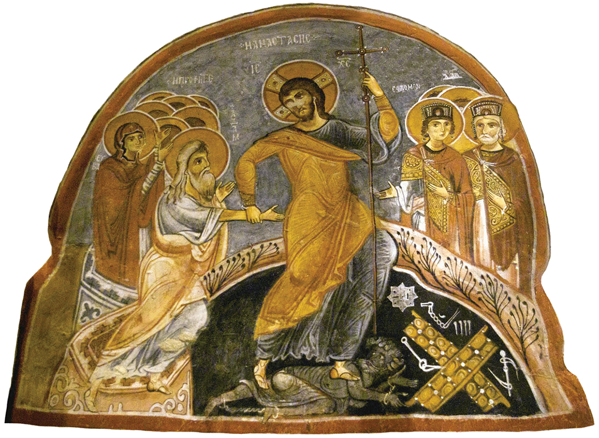

以赛亚书
- 新约引用以赛亚书次数超过任何其他旧约书卷
- 名字意思是「耶和华的拯救」（Yahweh is salvation）
- 以赛亚书的主题：神的审判与救赎
- 一些神学家称以赛亚书为「小圣经」或「旧约的福音书」，因为它包含了旧约的核心信息：神的圣洁、人的罪恶、神的审判、神的怜悯、弥赛亚的预言、以及新天新地的盼望
以赛亚的背景与呼召

- 时期：主前约791-687年，服事乌西雅、约坦、亚哈斯、希西家四位犹大王
- 历史背景：南国犹大逐渐远离神，道德败坏、社会不公、假冒为善
- 先知呼召（赛6章）：在圣殿中看见荣耀的耶和华，蒙洁净后回应「我在这里，请差遣我！」
- 全书结构：
- 第1-39章：审判与警告
- 第40-55章：安慰与仆人
- 第56-66章：恢复与新天新地
以赛亚书的中心信息

- 神的圣洁：「以色列的圣者」在全书出现约25次,参以赛亚6
- 神的审判：因百姓悖逆，必有刑罚
- 神的怜悯：即使审判，仍留余种，并应许救赎与恢复
- 弥赛亚的盼望：预言将来弥赛亚的来临与救赎工作
第一部分：审判与希望的宣告（第1-39章）
- 核心内容：聚焦以赛亚所处时代的预言
- 审判的宣告：警告耶路撒冷即将面临毁灭
- 希望的宣告：在审判中仍应许未来的复兴
- 历史走向：从耶路撒冷的罪、列国的骄傲，到巴比伦流放的伏笔
第1-12章：对耶路撒冷的审判与希望
- 核心内容：指责领袖的腐败和不义,上帝将炼净以色列（1:24-26）
- 以赛亚在圣殿中看见上帝的圣洁，并重新领受呼召
- 第6章带出「圣洁的种子」的应许
- 第7-12章预言这粒种子就是大卫的后裔「以马内利」，祂将带来公义与和平
第13-27章：对列国（万民）的审判与希望
- 视线从以色列转向世界（赛13:1）
- 巴比伦及以色列周边列国将因骄傲和不义走向毁灭（赛13-23章）
- 一座代表人类骄傲与悖逆的「高傲之城」终将倾覆（赛24-26章）
- 呼吁百姓永远倚靠耶和华，因为他是永古的磐石 (26:4)。
第28-39章：耶路撒冷的兴衰（历史插曲）
- 核心内容：通过希西家王的故事印证以赛亚的预言
- 以赛亚宣告耶路撒冷最终将被巴比伦摧毁，百姓将被流放
- 这段历史为后半卷书的安慰、仆人与新创造埋下伏笔
第40-48章：流放后的希望与以色列的抱怨
- 宣告流放结束，希望降临；但以色列人却在抱怨和质疑上帝，上帝指出流放是审判，不是偶然的历史失败
- 上帝兴起波斯帝国击败巴比伦，并预言以色列将被释放（赛45:13）
- 即使经历审判与拯救，以色列仍然硬着颈项（40:27）
- 以色列未能履行作为「上帝仆人」向万国作见证的使命
第49-55章：受苦的仆人（弥赛亚）
- 核心内容：既然以色列失败了，上帝兴起一位新的「仆人」来完成祂的救赎计划
- 祂承担双重使命：复兴以色列，并成为万国之光，这位仆人将被百姓拒绝，并像代罪羔羊一样受苦
- 祂担当人的罪，受苦、死亡，最终复活，借着祂，人得以与上帝和好
第56-66章：新耶路撒冷与新创造（终局）
- 以对称的文学结构，描绘人对这位「仆人」回应后的两种结局
- 被圣灵充满的仆人向穷人宣告好消息
- 拒绝仆人、固执己见的「恶人」将被上帝审判
- 谦卑认罪、接受代赎的「仆人们」将得到宽恕
- 他们将继承没有死亡和苦难的「新天地」，万国万民在新耶路撒冷中与上帝同住
以赛亚书中犹太人的罪恶
- 被审判的原因：百姓悖逆、假冒为善、不公义（赛1:2-4, 10-15）
- 拜偶像、欺压孤儿寡妇、社会充满罪恶
- 审判的预言（第1章生动描述）：
- 土地荒凉、城邑被焚烧、像葡萄园的草棚（赛1:7-8）
- 将被外邦（亚述、巴比伦）掳掠
- 神的管教目的：
- 炼净渣滓、恢复公义（赛1:25-27）
- 留下「余种」（赛1:9），不完全毁灭
- 后来应验：南国犹大被巴比伦掳掠70年（主前586年）
改革宗对放逐的理解
- 放逐不是神放弃祂的子民，而是神主权的管教
- 如同父亲管教儿女（来12:6），目的是叫百姓悔改、回转
- 显明神对亚伯拉罕和大卫之约的信实
表面宗教 vs 真实信仰对照（赛1章）
| 层面 | 虚假的宗教 (赛1章) | 真实的信仰 (神的要求) |
|---|---|---|
| 敬拜态度 | 献虚浮的供物，神以为麻烦 (赛1:13) | 洗濯自洁，从神眼前除掉恶行 (赛1:16) |
| 祷告光景 | 举手多多祈祷，神必遮眼不听 (赛1:15) | 学习行善，寻求公平 (赛1:17) |
| 对神的认知 | 不如牛驴，不认识神也不留意 (赛1:3) | 顺服神，听从神的训诲 (赛1:10) |
| 对人的态度 | 手都满了杀人的血 (赛1:15) | 解救受欺压的，给孤儿寡妇伸冤 (赛1:17) |
以赛亚书中弥赛亚的来临主题

- 基督在以赛亚书中的三种预表（Christ in Isaiah）：
- 审判的警告最终在基督里成就（赛53:4-6,12；林后5:21；来9:26）
- 放逐后的恢复——「新天新地」（赛65:17；66:22）
- 耶稣开启新创造（约1:1-9；林后5:17）
- 将来完全实现（启21:1-3）
- 仆人主题：
- 赛42:1-4：带来公义，成为外邦人的光
- 赛49:1-7：重立与神的约
- 赛7:14：童女怀孕生子，名叫「以马内利」
- 赛9:6-7：婴孩出生，「和平的君」，坐在大卫宝座上
- 赛11:1：耶西的嫩枝（大卫家谱）
- 赛52:13-53:12：受苦、担当罪孽、除掉选民的罪孽、复活
新约如何印证以赛亚的预言
- 明确指出「仆人」就是耶稣基督（太8:17；徒8:32-33；彼前2:22-25 等）
- 耶稣第一次来是受苦的仆人（赛52:13-53:12），他也是得胜的君王（11:1-10）
结论
- 即使百姓失败，神仍信守祂的约，在看似黑暗的时代中掌权
- 即使在以色列人全然败坏、即将面临绝望“放逐”的时刻，上帝依然持守恩典之约。
- 切的审判最终由“受苦的仆人”耶稣基督代为承受。
应用
- 承认自己的罪
- 数算恩典
- 仰望十架：在面对罪的软弱或生活的苦难时，仰望那位替我们承受了“终极放逐”（ref 凯勒牧师）的救主耶稣。
主要经文
- 神的控诉 - 「以色列不认识我，我的民不明白」（赛1:3）
- 仆人之歌 - 「祂为我们的过犯被刺，为我们的罪孽压伤」（赛53:5）
- 新天新地 - 「看哪，我造新天新地」（赛65:17）
讨论问题
- 在《以赛亚书》第一章中，犹大人仍然保持着守节期、献祭的宗教习惯，但神却说他们“不如牛驴”、所献的祭是神“所憎恶的”。在今天的教会生活中，我们是否也容易陷入这种“有宗教形式，无生命实质”的属灵危机？我们该如何分辨并脱离这种“全然败坏”的惯性？
- 以赛亚预言的「仆人」怎样在耶稣身上完全应验？
- 当时的以色列人深陷亚述和巴比伦的帝国威胁中，他们极度渴望一位强大的军事或政治领袖来拯救他们。然而，神借以赛亚应许的却是一位“受苦的仆人”（赛53章）。为什么上帝所预备的最高拯救，必须通过“代罪受苦”的方式来完成，而不是直接用武力消灭仇敌？
- 你愿意今天怎样回应神的呼召，像以赛亚一样说：「我在这里，请差遣我」？